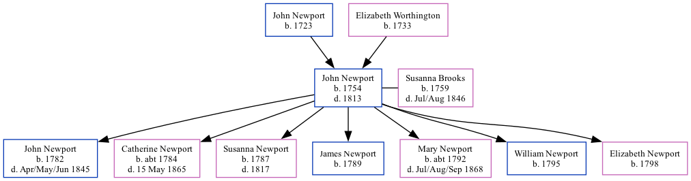

John Newport 1754 - 1813 [ Home ] | [ Calendar ] | [ Surnames Index ] | [ Family History ]The child of John Newport and Elizabeth Worthington John Newport , the 4 times great-grandfather of Nigel Horne , was born in Upper Hardres, Kent, England in 1754, was baptised there on 22 Dec 1754 and married Susanna Brooks (with whom he had 7 children: John , Catherine , Susanna , James , Mary , William and Elizabeth ) in Barham, Kent, England on 22 Oct 17801 .
He died in 1813 and was buried in Great Hardres, Kent, England on 11 Feb 18131,2 .
Parents John was born in 1723Elizabeth was born in 1733Children John was born in 1782Catherine was born c. 1784Susanna was born in 1787James was born in 1789Mary was born c. 1792William was born in 1795Elizabeth was born in 1798Citations Public Member Trees Online publication - Provo, UT, USA: The Generations Network, Inc., 2006.Original data - Family trees submitted by Ancestry members.Original data: Family trees submitted by Ancestry members. Familysearch.org (www.familysearch.org ) Family Tree Map
Generated by ged2site . Last updated on Feb 19, 2025